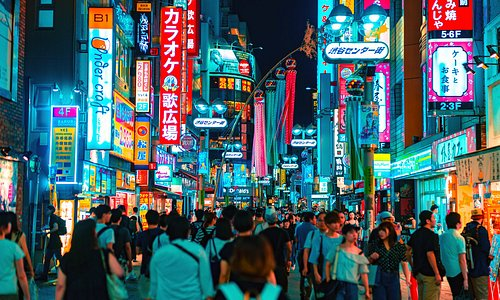
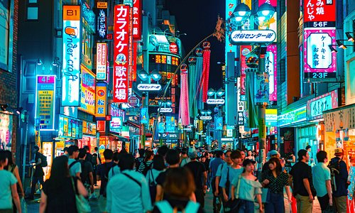

Tokio
Tokio es la capital de Japon, en ella podras descubrir un sin fin de sitios que visitar.
| Viajes | Precios |
|---|---|
| Tokio | 1300€ |
| Okinawa | 1150€ |
| Sapporo | 1200€ |
Tokio es la capital de Japon, en ella podras descubrir un sin fin de sitios que visitar.
Okinawa es la segunda ciudad mas grande de la prefectura de Okinawa, no es lo mismo la ciudad de Okinawa que la prefectura de Okinawa, en la cual se puede disfrutar de unas increibles vistas a su increible mar.
Sapporo es la capital de la prefectura de Hokkaido, adrentate en las preciosas montañas de la prefectura de hokkaido, la cual es conocida por su frio verano y su extremadamente frio invierno.